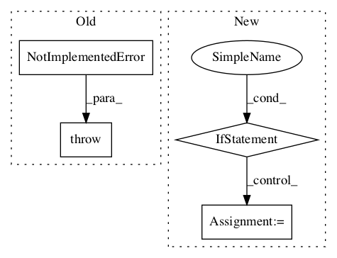

36bf1cd036d852d10b189727d43fee6ee0b6c66c,geomstats/geometry/special_euclidean.py,SpecialEuclidean,random_uniform,#SpecialEuclidean#Any#Any#,613

Before Change
axis=1)
elif point_type == "matrix":
raise NotImplementedError()
random_transfo = self.regularize(random_transfo, point_type=point_type)
return random_transfo
After Change
[random_rot_vec, random_translation],
axis=1)
elif point_type == "matrix":
random_rotation = self.rotations.random_uniform(
n_samples, point_type=point_type)
if n_samples == 1:
random_translation = gs.to_ndarray(
gs.transpose(random_translation), to_ndim=3)
else:
random_translation = gs.transpose(gs.to_ndarray(
random_translation, to_ndim=3))
random_point = gs.concatenate(
(random_rotation, random_translation), axis=2)
last_line = gs.zeros((n_samples, 1, self.n + 1))
random_point = gs.concatenate(
(random_point, last_line), axis=1)
random_point = gs.assignment(random_point, 1, (-1, -1), axis=0)
return random_point
def exponential_matrix(self, rot_vec):
In pattern: SUPERPATTERN
Frequency: 3
Non-data size: 4
Instances
Project Name: geomstats/geomstats
Commit Name: 36bf1cd036d852d10b189727d43fee6ee0b6c66c
Time:
Author: null
File Name: geomstats/geometry/special_euclidean.py
Class Name: SpecialEuclidean
Method Name: random_uniform
Project Name: geomstats/geomstats
Commit Name: 36bf1cd036d852d10b189727d43fee6ee0b6c66c
Time:
Author: null
File Name: geomstats/geometry/special_euclidean.py
Class Name: SpecialEuclidean
Method Name: inverse
Project Name: khaotik/DaNet-Tensorflow
Commit Name: de00082780be884fc90e0113d323bfd63006ffba
Time:
Author: null
File Name: main.py
Class Name:
Method Name: load_wavfile